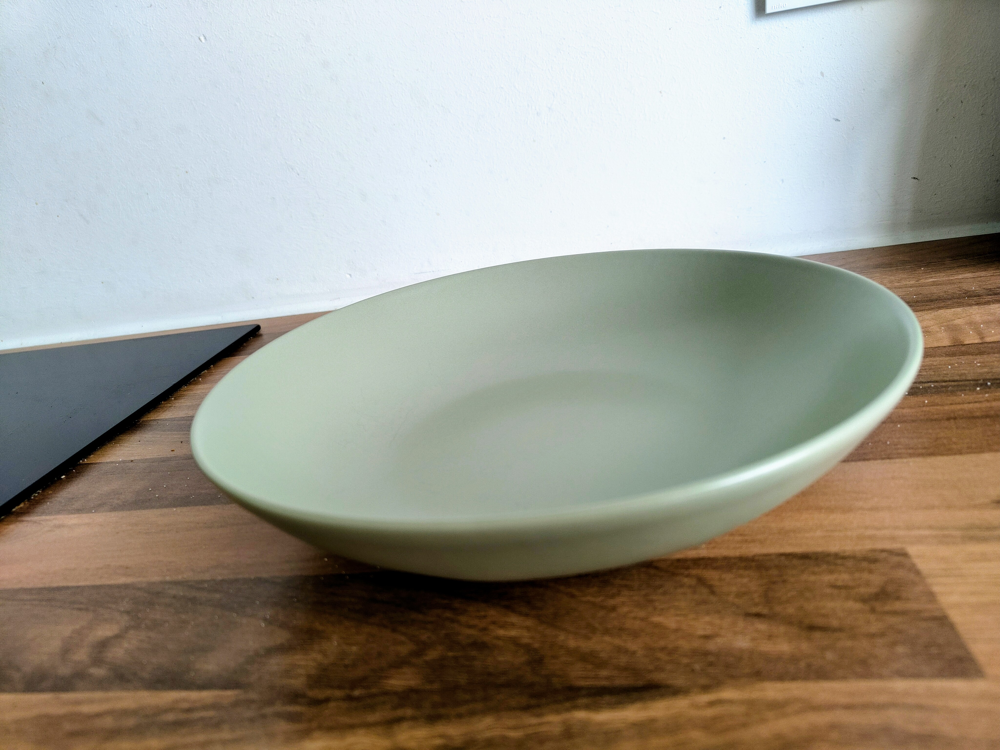

Home
Flemish stew with fries

Description
A classic Flemish dish.
Ingredients
Stew
- Pork cheeks 1 kg
- Large onion 2
- Bread 1 slice
- Luikse siroop 2 tbsp
- Chicken spices
- Red or brown beer 2 bottles
- Mustard 2 tbsp
- Dried bay leaves 4
- Salt
- Pepper
Fries
Side dish
- Chicory 4
- Apple 1
- Mayonnaise
- Salt
- Pepper
Steps
Stew
- Dice the onions and stew the shortly in a big pot.
- Rub the chicken spices on the pork cheeks. Heat up a pan and sear the pieces of meat on both side until brown. Add the pieces to the pot with the onions.
- Deglaze the pan with the beer and also add to the pot. Add water until all the meat is fully submerged.
- Add the Luikse siroop and dried bay leaves.
- Spread the mustard on the bread slice and put in the pot on top of the meat with the spread on the bottom. Season with salt and pepper.
- Let the stew simmer for 3 hours and stir once in a while.
Side dish
- Rinse the chicory and remove the heart. Cut in to long and very fine strips.
- Do the same with the apple.
- Add the chicory and apple to a mixing bowl with the mayonnaise. Season with salt and pepper.
Fries
- Peel and cut the potatoes in fries. Do not rinse the fries.
- Heat up the fryer until 140 degrees Celcius.
- Fry the fries, but do not let them get any color. Let them rest in a bowl with a piece of paper towel until cold.
- Heat up the fryer until 180 degrees Celcius.
- Fry the cold fries until golden brown.
- Add the fries back to the bowl with a piece of paper towel and sprinkle generously with salt.